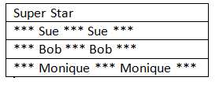

Objectives
This lab will put into practice the CREATE TABLE statement for creating constraints.
SELECT Statement
The manager of Global Fast Foods would like to send out coupons for the upcoming sale. He wants to send one coupon to each household. Create the SELECT statement that returns the customer last name and a mailing address.
Each statement below has errors. Correct the errors and execute the query in Oracle Application Express.
- SELECT first name FROM f_staffs;
- SELECT first_name |" "| last_name AS "DJs on Demand Clients" FROM d_clients;
- SELECT DISTINCT f_order_lines FROM quantity;
- SELECT order number FROM f_orders;
Sue, Bob and Monique were the employees of the month. Using the f_staffs table, write a CREATE statement to display the results as shown below.

Which is the following is TRUE about the following query?
SELECT first_name, DISTINCT birthdate FROM f_staffs;
- Only two rows will be returned
- Four rows will be returned
- Only Fred 05-Jan-1988 and Lizzie 10-Mov-1987 will be returned
- No rows will be returned
Global FAst Foods has decided to give all staff members a 5% pay rise. Write the SELECT statement that presents the output as shown below:

The owners of DJs on Demand would like a report of all items in their D_CDs table with the following column headings: Inventory Item, CD Title, Music Producer, and Year Purchased. Write the SELECT statement to produce this report.
There are four coding errors in this statement. Can you identify them?
- SELECT employee_id, last_name sal x 12 ANNUAL SALARY FROM employees;
Click on the History tab at the lower part of the SQL Commands window. Scroll to find the SQL statment you used to generate the SuperStar output. Click on the SQL and it will load into the command window. Execute the command to ensure it is correct. Click on the SAVE button in the top right corner. Enter a name for the saved statement. If you log out of Oracle Express and log back in you can click on the saved SQL tab and load it for editing or running.
WHERE CLAUSE
Using Global Fast Foods database, retrieve the customer's first name, last name and address for the customer who uses ID 456.
CA work
Being writing your CREATE TABLE statements for the tables needed in your continuous assessment.
Use a text editor like Sublime to do this ensuring your syntax is correct before executing the statements in Application Express.
If your table sucessfully creates and then you wish to make a change you simply need to execute:
DROP TABLE tablename;where tablename is the name of your table.
Remember when creating your tables you must know which tables are parents and which are children. The order of creation is important when you have foreign keys. Each parent table must be created first and then the child table.